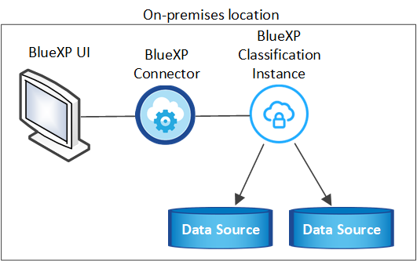

Versionshinweise
Versionshinweise
BlueXP Klassifizierung auf einem Host ohne Internetzugang installieren
 Änderungen vorschlagen
Änderungen vorschlagen
Führen Sie einige Schritte aus, um die BlueXP Klassifizierung auf einem Linux-Host auf einer lokalen Site ohne Internetzugang – auch als „privater Modus“ bezeichnet – zu installieren. Diese Art der Installation ist perfekt für Ihre sicheren Standorte.
Beachten Sie, dass Sie auch können "Implementieren Sie die BlueXP Klassifizierung auf einer lokalen Website mit Internetzugang".
Das BlueXP Klassifizierungs-Installationsskript wird zunächst überprüft, ob das System und die Umgebung die erforderlichen Voraussetzungen erfüllen. Wenn alle Voraussetzungen erfüllt sind, wird die Installation gestartet. Wenn Sie die Voraussetzungen unabhängig vom Ausführen der BlueXP Klassifizierungssysteminstallation überprüfen möchten, steht Ihnen ein separates Softwarepaket zur Verfügung, das nur auf die Voraussetzungen testet. "Erfahren Sie, wie Sie überprüfen können, ob Ihr Linux-Host bereit ist, die BlueXP Klassifizierung zu installieren".
Unterstützte Datenquellen
Bei installierter Private-Mode (manchmal auch „offline“ oder „dunkle“ Site genannt) kann die BlueXP Klassifizierung nur Daten aus Datenquellen scannen, die auch lokal am lokalen Standort gespeichert sind. Die BlueXP Klassifizierung kann derzeit die folgenden lokalen Datenquellen scannen:
-
On-Premises ONTAP Systeme
-
Datenbankschemas
-
SharePoint On-Premises-Accounts (SharePoint Server)
-
NFS- oder CIFS-Dateifreigaben anderer Anbieter
-
Objekt-Storage, der das Simple Storage Service (S3)-Protokoll verwendet
Derzeit wird Cloud Volumes ONTAP, Azure NetApp Files, FSX für ONTAP, AWS S3 oder Google Drive nicht unterstützt, OneDrive- oder SharePoint Online-Konten, wenn die BlueXP Klassifizierung im privaten Modus bereitgestellt wird.
Einschränkungen
Die meisten BlueXP Klassifizierungsfunktionen sind verfügbar, wenn sie an einem Standort ohne Internetzugang implementiert werden. Bestimmte Funktionen, für die ein Internetzugang erforderlich ist, werden jedoch nicht unterstützt, z. B.:
-
Verwalten von Etiketten in Microsoft Azure Information Protection (AIP)
-
Senden von E-Mail-Warnungen an BlueXP-Benutzer, wenn bestimmte kritische Richtlinien Ergebnisse liefern
-
Festlegen von BlueXP-Rollen für unterschiedliche Benutzer (z. B. Account Admin oder Compliance Viewer)
-
Quelldateien werden mittels BlueXP Kopier- und Synchronisierungsfunktion kopiert und synchronisiert
-
Benutzerfeedback wird empfangen
-
Automatisierte Software-Upgrades von BlueXP
Sowohl der BlueXP Connector als auch die BlueXP Klassifizierung erfordern regelmäßige manuelle Upgrades zur Aktivierung neuer Funktionen. Die BlueXP Klassifizierungsversion wird unten auf den BlueXP Klassifizierungs-UI-Seiten angezeigt. Prüfen Sie die "BlueXP Klassifizierung – Versionshinweise" Um sich die neuen Funktionen in jeder Version und deren Wunsch nach jenen Funktionen ansehen zu können. Anschließend können Sie die Schritte befolgen "Upgrade des BlueXP Connector" Und Upgrade Ihrer BlueXP Klassifizierungssoftware.
Schnellstart
Führen Sie diese Schritte schnell durch, oder scrollen Sie nach unten zu den verbleibenden Abschnitten, um ausführliche Informationen zu erhalten.
 Installieren Sie den BlueXP-Anschluss
Installieren Sie den BlueXP-AnschlussWenn Sie noch keinen Connector im privaten Modus installiert haben, "Den Stecker einsetzen" Jetzt auf einem Linux-Host.
 Voraussetzungen für die BlueXP Klassifizierung prüfen
Voraussetzungen für die BlueXP Klassifizierung prüfenStellen Sie sicher, dass Ihr Linux-System die erfüllt Host-Anforderungen erfüllt, Dass es alle erforderliche Software installiert hat, und dass Ihre Offline-Umgebung die erforderlichen erfüllt Berechtigungen und Konnektivität.
 Laden Sie die BlueXP Klassifizierung herunter und implementieren Sie sie
Laden Sie die BlueXP Klassifizierung herunter und implementieren Sie sieLaden Sie die BlueXP Klassifizierungssoftware von der NetApp Support-Website herunter und kopieren Sie die Installer-Datei auf den geplanten Linux-Host. Starten Sie dann den Installationsassistenten und befolgen Sie die Anweisungen zur Implementierung der BlueXP Klassifizierungsinstanz.
 Abonnieren Sie den BlueXP Klassifizierungsservice
Abonnieren Sie den BlueXP KlassifizierungsserviceDie ersten 1 TB an Daten, die die BlueXP Klassifizierung in BlueXP scannt, sind 30 Tage lang kostenlos. Nach diesem Zeitpunkt ist eine BYOL-Lizenz von NetApp erforderlich, um das Scannen von Daten fortzusetzen.
Installieren Sie den BlueXP-Anschluss
Wenn Sie noch keinen BlueXP Connector im privaten Modus installiert haben, "Den Stecker einsetzen" Auf einem Linux-Host in Ihrer Offline-Site.
Bereiten Sie das Linux-Hostsystem vor
Die BlueXP Klassifizierungssoftware muss auf einem Host ausgeführt werden, der bestimmte Betriebssystemanforderungen, RAM-Anforderungen, Software-Anforderungen usw. erfüllt.
-
Die BlueXP Klassifizierung wird auf einem Host, der mit anderen Applikationen gemeinsam genutzt wird, nicht unterstützt – der Host muss ein dedizierter Host sein.
-
Wenn Sie das Host-System an Ihrem Standort aufbauen, haben Sie die Wahl zwischen drei Systemgrößen, je nach Größe des Datensatzes, den Sie die BlueXP Klassifizierung scannen möchten.
Systemgröße CPU RAM (Swap-Speicher muss deaktiviert sein) Festplatte Extra Groß
32 CPUs
128 GB RAM
1 tib SSD auf /, oder
- 100 gib verfügbar auf /opt
- 895 gib verfügbar auf /var/lib/docker
- 5 gib auf /tmpGroß
16 CPUs
64 GB RAM
500 gib SSD auf /, oder
- 100 gib verfügbar auf /opt
- 395 gib verfügbar auf /var/lib/docker
- 5 gib auf /tmpMittel
8 CPUs
32 GB RAM
200 gib SSD auf /, oder
- 50 gib verfügbar auf /opt
- 145 gib verfügbar auf /var/lib/docker
- 5 gib auf /tmpKlein
8 CPUs
16 GB RAM
100 gib SSD auf /, oder
- 50 gib verfügbar auf /opt
- 45 gib verfügbar auf /var/lib/docker
- 5 gib auf /tmpBeachten Sie, dass es bei der Verwendung der kleineren Systeme Einschränkungen gibt. Siehe "Verwenden eines kleineren Instanztyps" Entsprechende Details.
-
Bei der Implementierung einer Computing-Instanz in der Cloud für Ihre BlueXP Klassifizierungsinstallation empfehlen wir ein System, das die oben genannten „großen“ Systemanforderungen erfüllt:
-
AWS EC2 Instanztyp: Wir empfehlen "m6i.4xlarge". "Siehe zusätzliche AWS-Instanztypen".
-
Größe der Azure VM: Wir empfehlen „Standard_D16s_v3“. "Siehe zusätzliche Azure-Instanztypen".
-
GCP-Maschinentyp: Wir empfehlen "n2-Standard-16". "Weitere GCP-Instanztypen finden Sie unter".
-
-
UNIX-Ordnerberechtigungen: Folgende UNIX-Mindestberechtigungen sind erforderlich:
Ordner Mindestberechtigungen /Tmp
rwxrwxrwt/Opt
rwxr-xr-x/Var/lib/Docker
rwx------/Usr/lib/systemd/System
rwxr-xr-x -
Betriebssystem:
-
Für die folgenden Betriebssysteme ist die Verwendung der Docker Container-Engine erforderlich:
-
Red hat Enterprise Linux Version 7.8 und 7.9
-
CentOS Version 7.8 und 7.9
-
Ubuntu 22.04 (BlueXP Klassifikation ab Version 1.23 erforderlich)
-
-
Die folgenden Betriebssysteme erfordern die Verwendung der Podman Container-Engine. Sie erfordern eine BlueXP Klassifikation der Version 1.26 oder höher:
-
Red hat Enterprise Linux Version 9.0, 9.1 und 9.2
Beachten Sie, dass die folgenden Funktionen derzeit bei Verwendung von RHEL 9.x nicht unterstützt werden:
-
Installation an einem dunklen Ort
-
Verteiltes Scannen; Verwendung eines Master-Scanner-Knotens und Remote-Scanner-Knoten
-
-
-
-
Red hat Subscription Management: Der Host muss bei Red hat Subscription Management registriert sein. Wenn es nicht registriert ist, kann das System während der Installation nicht auf Repositorys zugreifen, um erforderliche Drittanbietersoftware zu aktualisieren.
-
Zusätzliche Software: Sie müssen die folgende Software auf dem Host installieren, bevor Sie die BlueXP-Klassifizierung installieren:
-
Je nach verwendetem Betriebssystem müssen Sie eine der Container-Engines installieren:
-
Docker Engine ab Version 19.3.1. "Installationsanweisungen anzeigen".
"Hier geht's zum Video" Eine kurze Demo zur Installation von Docker auf CentOS.
-
Podman Version 4 oder höher. Um Podman zu installieren, aktualisieren Sie die Systempakete (
sudo yum update -y), und installieren Sie dann Podman (sudo yum install podman -y).
-
-
Python Version 3.6 oder höher. "Installationsanweisungen anzeigen".
-
-
NTP-Überlegungen: NetApp empfiehlt die Konfiguration des BlueXP Klassifizierungssystems für die Verwendung eines NTP-Dienstes (Network Time Protocol). Die Zeit muss zwischen dem BlueXP Klassifizierungssystem und dem BlueXP Connector System synchronisiert werden.
-
Firewalld Überlegungen: Wenn Sie planen zu verwenden
firewalld, Wir empfehlen, dass Sie es aktivieren, bevor Sie BlueXP Klassifizierung installieren. Führen Sie die folgenden Befehle zum Konfigurieren ausfirewalldDamit es mit der BlueXP Klassifizierung kompatibel ist:firewall-cmd --permanent --add-service=http firewall-cmd --permanent --add-service=https firewall-cmd --permanent --add-port=80/tcp firewall-cmd --permanent --add-port=8080/tcp firewall-cmd --permanent --add-port=443/tcp firewall-cmd --reload
Beachten Sie, dass Sie Docker oder Podman neu starten müssen, wenn Sie aktivieren oder aktualisieren
firewalldEinstellungen.

|
Die IP-Adresse des Host-Systems für die BlueXP Klassifizierung kann nach der Installation nicht mehr geändert werden. |
Voraussetzungen für die Klassifizierung von BlueXP und BlueXP prüfen
Überprüfen Sie die folgenden Voraussetzungen, um sicherzustellen, dass vor der Implementierung der BlueXP Klassifizierung eine unterstützte Konfiguration vorhanden ist.
-
Stellen Sie sicher, dass der Connector über die Berechtigungen zum Implementieren von Ressourcen und zum Erstellen von Sicherheitsgruppen für die BlueXP Klassifizierungsinstanz verfügt. Die neuesten BlueXP-Berechtigungen finden Sie in "Die von NetApp bereitgestellten Richtlinien".
-
Sorgen Sie dafür, dass die BlueXP Klassifizierung weiter ausgeführt werden kann. Die BlueXP Klassifizierungs-Instanz muss aktiviert bleiben, um Ihre Daten kontinuierlich zu scannen.
-
Webbrowser-Konnektivität zur BlueXP Klassifizierung sicherstellen Nachdem die Klassifizierung von BlueXP aktiviert ist, stellen Sie sicher, dass Benutzer von einem Host, der über eine Verbindung zur BlueXP Klassifizierungsinstanz verfügt, auf die BlueXP Schnittstelle zugreifen.
Die BlueXP Klassifizierungsinstanz verwendet eine private IP-Adresse, um sicherzustellen, dass andere nicht auf die indizierten Daten zugreifen können. Daher muss der Webbrowser, den Sie für den Zugriff auf BlueXP verwenden, über eine Verbindung mit dieser privaten IP-Adresse verfügen. Diese Verbindung kann von einem Host stammen, der sich im selben Netzwerk wie die BlueXP Klassifizierungsinstanz befindet.
Vergewissern Sie sich, dass alle erforderlichen Ports aktiviert sind
Sie müssen sicherstellen, dass alle erforderlichen Ports für die Kommunikation zwischen Connector, BlueXP Klassifizierung, Active Directory und Ihren Datenquellen offen sind.
| Verbindungstyp | Ports | Beschreibung |
|---|---|---|
Connector <> BlueXP Klassifizierung |
8080 (TCP), 6000 (TCP), 443 (TCP) UND 80 |
Die Sicherheitsgruppe für den Connector muss ein- und ausgehenden Datenverkehr über die Ports 6000 und 443 zur und von der BlueXP Klassifizierungsinstanz zulassen.
|
Connector <> ONTAP-Cluster (NAS) |
443 (TCP) |
BlueXP erkennt ONTAP-Cluster mithilfe von HTTPS. Wenn Sie benutzerdefinierte Firewall-Richtlinien verwenden, müssen diese die folgenden Anforderungen erfüllen:
|
BlueXP Klassifizierung <> ONTAP Cluster |
|
Für die BlueXP Klassifizierung benötigen Sie eine Netzwerkverbindung zu jedem Cloud Volumes ONTAP Subnetz oder Ihrem lokalen ONTAP System. Sicherheitsgruppen für Cloud Volumes ONTAP müssen eingehende Verbindungen von der BlueXP Klassifizierungsinstanz ermöglichen. Stellen Sie sicher, dass die Ports für die BlueXP Klassifizierungsinstanz offen sind:
NFS-Volume-Exportrichtlinien müssen den Zugriff von der BlueXP Klassifizierungsinstanz ermöglichen. |
BlueXP Klassifizierung <> Active Directory |
389 (TCP & UDP), 636 (TCP), 3268 (TCP) UND 3269 (TCP) |
Sie müssen bereits ein Active Directory für die Benutzer in Ihrem Unternehmen eingerichtet haben. Darüber hinaus sind für die BlueXP Klassifizierung Active Directory Anmeldeinformationen erforderlich, um CIFS-Volumes zu scannen. Sie müssen über die folgenden Informationen für das Active Directory verfügen:
|
Wenn Sie mehrere BlueXP Klassifizierungs-Hosts nutzen, um eine zusätzliche Rechenleistung zum Scannen Ihrer Datenquellen zu bieten, müssen Sie zusätzliche Ports/Protokolle aktivieren. "Siehe zusätzliche Anschlussanforderungen".
BlueXP Klassifizierung auf dem lokalen Linux-Host installieren
Für typische Konfigurationen installieren Sie die Software auf einem einzigen Host-System. "Siehe diese Schritte hier".

Bei sehr großen Konfigurationen, bei denen Sie Petabyte an Daten scannen, können Sie mehrere Hosts einschließen, um zusätzliche Verarbeitungsleistung zu schaffen. "Siehe diese Schritte hier".

Installation mit einem Host für typische Konfigurationen
Folgen Sie diesen Schritten, wenn Sie die BlueXP Klassifizierungssoftware auf einem einzelnen lokalen Host in einer Offline-Umgebung installieren.
Beachten Sie, dass alle Installationsaktivitäten bei der Installation der BlueXP Klassifizierung protokolliert werden. Wenn während der Installation Probleme auftreten, können Sie den Inhalt des Audit-Protokolls für die Installation anzeigen. Es ist geschrieben /opt/netapp/install_logs/. "Weitere Details finden Sie hier".
-
Vergewissern Sie sich, dass Ihr Linux-System die erfüllt Host-Anforderungen erfüllt.
-
Überprüfen Sie, ob Sie die beiden erforderlichen Softwarepakete (Docker Engine oder Podman und Python 3) installiert haben.
-
Stellen Sie sicher, dass Sie über Root-Rechte auf dem Linux-System verfügen.
-
Vergewissern Sie sich, dass die erforderliche Offline-Umgebung erfüllt ist Berechtigungen und Konnektivität.
-
Laden Sie die BlueXP Klassifizierungssoftware auf einem internetkonfigurierten System von der herunter "NetApp Support Website". Die ausgewählte Datei heißt DataSense-offline-Bundle-<Version>.tar.gz.
-
Kopieren Sie das Installationspaket auf den Linux-Host, den Sie im privaten Modus verwenden möchten.
-
Entpacken Sie das Installationspaket auf dem Hostcomputer, z. B.:
tar -xzf DataSense-offline-bundle-v1.25.0.tar.gzDiese extrahiert erforderliche Software und die eigentliche Installationsdatei cc_onprem_Installer.tar.gz.
-
Entpacken Sie die Installationsdatei auf dem Host-Rechner, z. B.:
tar -xzf cc_onprem_installer.tar.gz -
Starten Sie BlueXP, und wählen Sie Governance > Klassifizierung.
-
Klicken Sie Auf Datensense Aktivieren.

-
Klicken Sie auf Deploy, um die On-Premises-Installation zu starten.

-
Das Dialogfeld Deploy Data Sense on premise wird angezeigt. Kopieren Sie den angegebenen Befehl (z. B.:
sudo ./install.sh -a 12345 -c 27AG75 -t 2198qq --darksite) Und fügen Sie sie in eine Textdatei ein, damit Sie sie später verwenden können. Klicken Sie dann auf Schließen, um das Dialogfeld zu schließen. -
Geben Sie auf dem Hostcomputer den kopierten Befehl ein, und folgen Sie dann einer Reihe von Eingabeaufforderungen. Alternativ können Sie den vollständigen Befehl einschließlich aller erforderlichen Parameter als Befehlszeilenargumente bereitstellen.
Beachten Sie, dass das Installationsprogramm eine Vorprüfung durchführt, um sicherzustellen, dass Ihre System- und Netzwerkanforderungen für eine erfolgreiche Installation erfüllt werden.
Geben Sie die Parameter wie aufgefordert ein: Geben Sie den vollständigen Befehl ein: -
Fügen Sie die Informationen ein, die Sie aus Schritt 8 kopiert haben:
sudo ./install.sh -a <account_id> -c <client_id> -t <user_token> --darksite -
Geben Sie die IP-Adresse oder den Hostnamen der Host-Maschine der BlueXP Klassifizierung ein, damit das Connector-System darauf zugreifen kann.
-
Geben Sie die IP-Adresse oder den Host-Namen der BlueXP Connector Host Machine ein, damit das BlueXP Klassifizierungssystem darauf zugreifen kann.
Alternativ können Sie den gesamten Befehl vorab erstellen und die erforderlichen Host-Parameter bereitstellen:
sudo ./install.sh -a <account_id> -c <client_id> -t <user_token> --host <ds_host> --manager-host <cm_host> --no-proxy --darksiteVariablenwerte:
-
Account_id = NetApp Konto-ID
-
Client_id = Konnektor-Client-ID (fügen Sie der Client-ID das Suffix „Clients“ hinzu, falls es noch nicht vorhanden ist)
-
User_Token = JWT-Benutzer-Zugriffstoken
-
ds_Host = IP-Adresse oder Host-Name des BlueXP Klassifizierungssystems.
-
Cm_Host = IP-Adresse oder Hostname des BlueXP Connector-Systems.
-
Das BlueXP Klassifizierungs-Installationsprogramm installiert Pakete, registriert die Installation und installiert die BlueXP Klassifizierung. Die Installation dauert 10 bis 20 Minuten.
Wenn Konnektivität über Port 8080 zwischen der Host-Maschine und der Connector-Instanz besteht, wird der Installationsfortschritt auf der Registerkarte BlueXP Klassifizierung in BlueXP angezeigt.
Auf der Konfigurationsseite können Sie das lokale auswählen "ONTAP-Cluster vor Ort" Und "Datenbanken" Die Sie scannen möchten.
Das können Sie auch "Byol-Lizenzierung für die BlueXP Klassifizierung einrichten" Von der BlueXP Digital-Wallet-Seite aus. Sie werden erst nach Ablauf der 30-tägigen kostenlosen Testversion belastet.
Installation mit mehreren Hosts für große Konfigurationen
Bei sehr großen Konfigurationen, bei denen Sie Petabyte an Daten scannen, können Sie mehrere Hosts einschließen, um zusätzliche Verarbeitungsleistung zu schaffen. Bei der Verwendung mehrerer Hostsysteme wird das primäre System als Manager-Node bezeichnet, und die zusätzlichen Systeme, die zusätzliche Rechenleistung bieten, heißen Scanner-Nodes.
Befolgen Sie diese Schritte, wenn Sie die BlueXP Klassifizierungssoftware auf mehreren lokalen Hosts in einer Offline-Umgebung installieren.
-
Stellen Sie sicher, dass alle Linux-Systeme für den Manager- und Scanner-Knoten den entsprechen Host-Anforderungen erfüllt.
-
Überprüfen Sie, ob Sie die beiden erforderlichen Softwarepakete (Docker Engine oder Podman und Python 3) installiert haben.
-
Stellen Sie sicher, dass Sie auf den Linux-Systemen über Root-Rechte verfügen.
-
Vergewissern Sie sich, dass die erforderliche Offline-Umgebung erfüllt ist Berechtigungen und Konnektivität.
-
Sie müssen über die IP-Adressen der zu verwendenden Scanner-Knoten-Hosts verfügen.
-
Die folgenden Ports und Protokolle müssen auf allen Hosts aktiviert sein:
Port Protokolle Beschreibung 2377
TCP
Cluster-Management-Kommunikation
7946
TCP, UDP
Kommunikation zwischen den Knoten
4789
UDP
Overlay-Netzwerk-Traffic
50
ESP
Verschlüsselter ESP-Datenverkehr (IPsec Overlay Network)
111
TCP, UDP
NFS-Server für die gemeinsame Nutzung von Dateien zwischen den Hosts (benötigt von jedem Scanner-Knoten zu Manager-Knoten)
2049
TCP, UDP
NFS-Server für die gemeinsame Nutzung von Dateien zwischen den Hosts (benötigt von jedem Scanner-Knoten zu Manager-Knoten)
-
Befolgen Sie die Schritte 1 bis 8 vom "Installation über einen Host" Auf dem Knoten Manager.
-
Wie in Schritt 9 gezeigt, können Sie bei Aufforderung durch das Installationsprogramm die erforderlichen Werte in eine Reihe von Eingabeaufforderungen eingeben oder die erforderlichen Parameter als Befehlszeilenargumente für das Installationsprogramm bereitstellen.
Zusätzlich zu den Variablen, die für eine Installation mit einem Host verfügbar sind, wird eine neue Option -n <Node_ip> verwendet, um die IP-Adressen der Scannerknoten anzugeben. Mehrere Knoten-IPs werden durch Komma getrennt.
Mit diesem Befehl werden beispielsweise 3 Scannerknoten hinzugefügt:
sudo ./install.sh -a <account_id> -c <client_id> -t <user_token> --host <ds_host> --manager-host <cm_host> -n <node_ip1>,<node_ip2>,<node_ip3> --no-proxy --darksite -
Bevor die Installation des Manager-Node abgeschlossen ist, wird in einem Dialogfeld der für die Scanner-Knoten erforderliche Installationsbefehl angezeigt. Kopieren Sie den Befehl (z. B.:
sudo ./node_install.sh -m 10.11.12.13 -t ABCDEF-1-3u69m1-1s35212) Und in einer Textdatei speichern. -
Auf * jedem Scanner-Knoten-Host:
-
Kopieren Sie die Data Sense Installer-Datei (cc_onprem_Installer.tar.gz) auf den Host-Rechner.
-
Entpacken Sie die Installationsdatei.
-
Fügen Sie den Befehl ein, den Sie in Schritt 3 kopiert haben, und führen Sie ihn aus.
Wenn die Installation auf allen Scanner-Knoten abgeschlossen ist und sie mit dem Manager-Knoten verbunden wurden, wird auch die Installation des Manager-Knotens abgeschlossen.
-
Das BlueXP Klassifizierungs-Installationsprogramm schließt die Installation der Pakete ab und registriert die Installation. Die Installation dauert 15 bis 25 Minuten.
Auf der Konfigurationsseite können Sie das lokale auswählen "ONTAP-Cluster vor Ort" Und lokal "Datenbanken" Die Sie scannen möchten.
Das können Sie auch "Byol-Lizenzierung für die BlueXP Klassifizierung einrichten" Von der BlueXP Digital-Wallet-Seite aus. Sie werden erst nach Ablauf der 30-tägigen kostenlosen Testversion belastet.
Upgrade der BlueXP Klassifizierungssoftware
Da die BlueXP Klassifizierungssoftware regelmäßig mit neuen Funktionen aktualisiert wird, sollten Sie regelmäßig auf neue Versionen überprüfen, um sicherzustellen, dass Sie die neueste Software und Funktionen verwenden. Sie müssen die BlueXP Klassifizierungssoftware manuell aktualisieren, da für ein automatisches Upgrade keine Internetverbindung besteht.
-
Wir empfehlen ein Upgrade Ihrer BlueXP Connector Software auf die neueste verfügbare Version. "Siehe die Schritte zur Aktualisierung des Connectors".
-
Ab der BlueXP Klassifizierungsversion 1.24 können Sie Upgrades auf jede beliebige zukünftige Softwareversion durchführen.
Wenn Ihre BlueXP Klassifizierungssoftware eine Version vor 1.24 verwendet, können Sie jeweils nur eine Hauptversion aktualisieren. Wenn Sie beispielsweise Version 1.21.x installiert haben, können Sie nur auf 1.22.x aktualisieren Wenn Sie einige Hauptversionen hinter sich haben, müssen Sie die Software mehrmals aktualisieren.
-
Laden Sie die BlueXP Klassifizierungssoftware auf einem internetkonfigurierten System von der herunter "NetApp Support Website". Die ausgewählte Datei heißt DataSense-offline-Bundle-<Version>.tar.gz.
-
Kopieren Sie das Software-Bundle auf den Linux-Host, auf dem die BlueXP Klassifizierung am Dark Site installiert ist.
-
Entpacken Sie das Software-Bundle auf dem Host-Rechner, zum Beispiel:
tar -xvf DataSense-offline-bundle-v1.25.0.tar.gzDadurch wird die Installationsdatei cc_onprem_Installer.tar.gz extrahiert.
-
Entpacken Sie die Installationsdatei auf dem Host-Rechner, z. B.:
tar -xzf cc_onprem_installer.tar.gzDadurch wird das Upgrade-Skript Start_darchsite_Upgrade.sh und jede erforderliche Software von Drittanbietern extrahiert.
-
Führen Sie das Upgrade-Skript auf dem Hostcomputer aus, z. B.:
start_darksite_upgrade.sh
Die BlueXP Klassifizierungssoftware wird auf Ihrem Host aktualisiert. Die Aktualisierung kann 5 bis 10 Minuten dauern.
Beachten Sie, dass für Scanner-Nodes kein Upgrade erforderlich ist, wenn Sie die BlueXP Klassifizierung auf mehreren Host-Systemen zum Scannen sehr großer Konfigurationen implementiert haben.
Sie können überprüfen, ob die Software aktualisiert wurde, indem Sie die Version unten auf den BlueXP Klassifizierungs-UI-Seiten überprüfen.